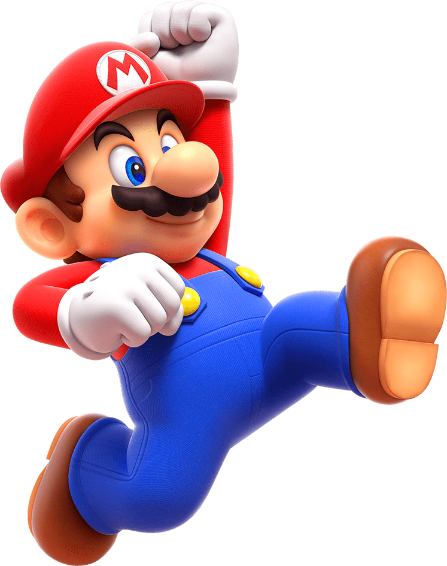

<!DOCTYPE html>
<html lang="en">
<head>
    <meta charset="UTF-8">
    <meta name="viewport" content="width=device-width, initial-scale=1.0">
    <title>Image Related Things</title>
    <link rel="stylesheet" href="style.css">
</head>
<body>
    <main>
        <!-- <section class="card">
            
            <label class="card-title"><strong>Mario</strong></label>
            <p class="card-description">Mario is a video game character and the mascot of Nintendo. He was created by Japanese video game designer Shigeru Miyamoto. Mario first appeared in the 1981 arcade game Donkey Kong. In the game, he was called Jumpman and was a carpenter.</p>
        </section> -->
        <section class="mario-container">
            
        </section>
    </main>
</body>
</html>